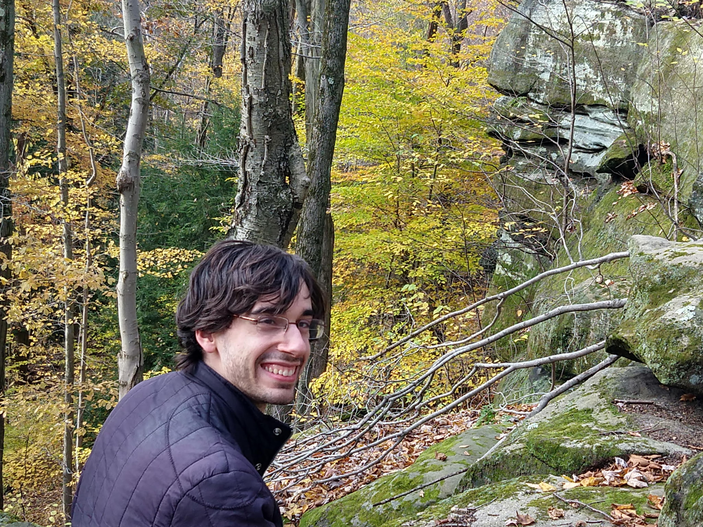

Matthew Harper

I am an RTG postdoc at Michigan State University, working with Effie Kalfagianni. I was a Visiting Assistant Professor at University of California, Riverside during 2021-2024 and worked with Peter Samuelson. I received my Ph.D. in 2021 from The Ohio State University and was advised by Thomas Kerler.
In my research, I study low-dimensional topology through the lens of representation theory. I focus primarily on quantum invariants of knots and links, including the Links-Gould polynomial and other generalizations of the Alexander polynomial derived from non-semisimple quantum groups. I am also interested in categorification and higher representation theory, and how these frameworks provide deeper insights into topological and algebraic structures. Please see my Research page for more information.
Code that I use in my work is available at https://github.com/mrhmath.
I enjoy discussing mathematics with Linh Huynh, who does research on some combinations of probability theory and stochastic processes, statistical inference, numerical optimization, mathematical biology, and the statistical mechanics of complex systems.
Email: harpe111 (at) msu (dot) edu